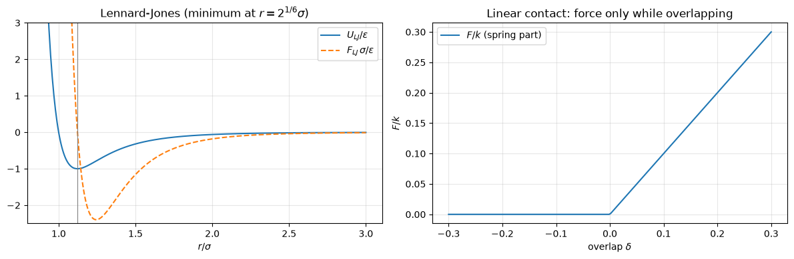
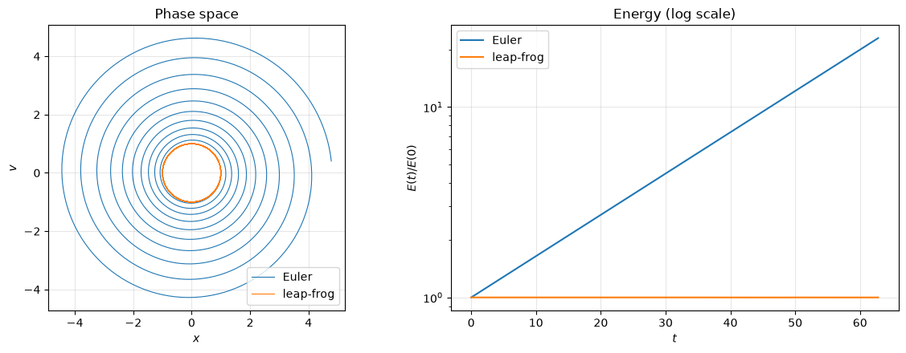
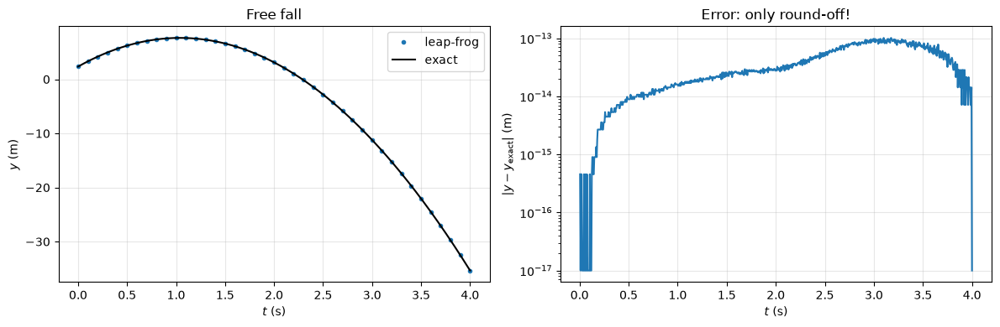
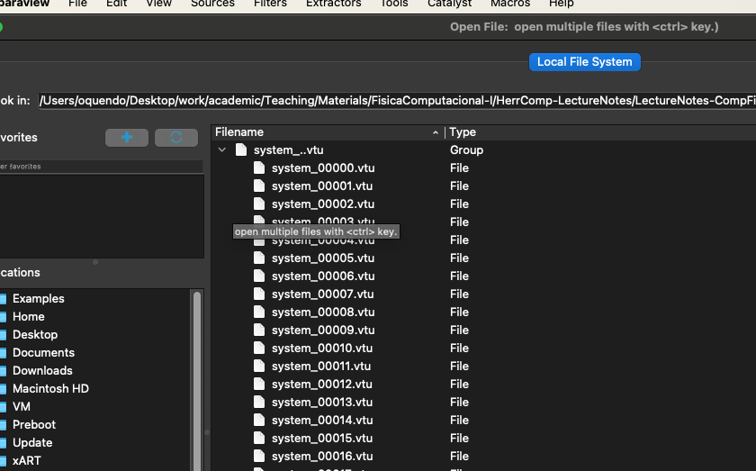
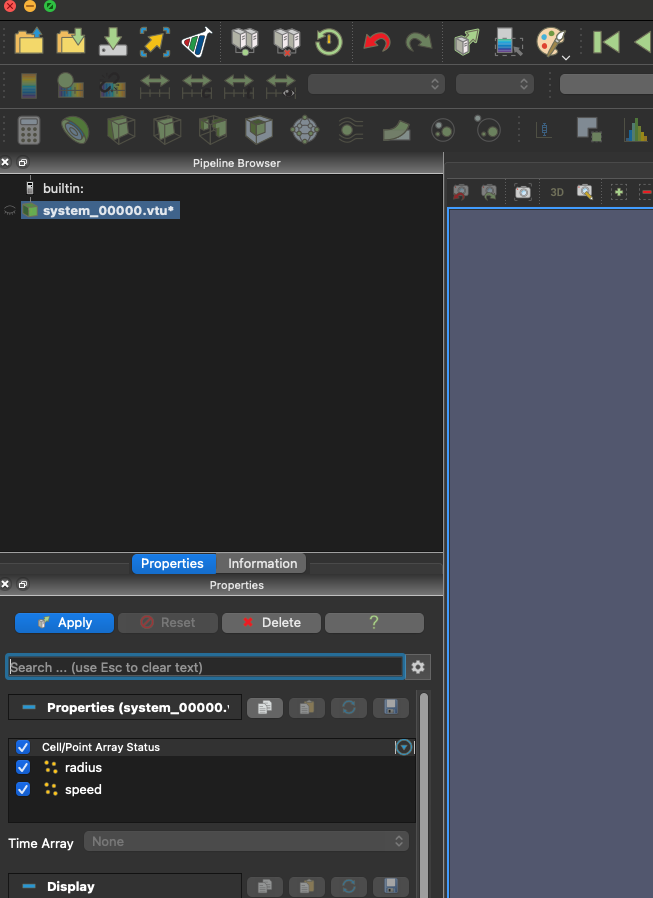
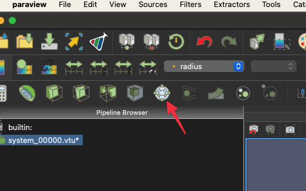

Molecular Dynamics#

Molecular dynamics (MD) simulates a system as a set of discrete bodies that interact through given forces, and integrates Newton’s equations of motion for all of them. The same idea works from atoms to sand grains to planetary rings; for macroscopic grains it is called the Discrete Element Method (DEM).
Learning goals. After this lecture you should be able to
Describe the three ingredients of every MD code: bodies, forces (force field / contact model) and a time integrator.
Explain why MD uses symplectic integrators (leap-frog, velocity Verlet) and how to choose the time step.
Build a small, modular MD code in Python (
Body,Collider,TimeIntegrator) and extend it with gravity, drag, walls, contacts between particles and long-range gravity.Validate a simulation against exact results (free fall, coefficient of restitution, Kepler orbits, energy conservation).
Export the results for professional visualization tools (ParaView, PyVista).
The MD recipe#

Every MD code needs to
define the bodies: atoms, molecules, sand grains, rocks, planets… Usually a class/struct with mass, position, velocity, force (and radius, orientation, …).
define the forces: external fields (gravity), contact forces (repulsion, friction, damping), long-range interactions (gravity, electrostatics). Usually handled by a
Collider(or “force field”) object.define the time integrator: Verlet, velocity Verlet, leap-frog, other symplectic schemes, RESPA, …
A real code also deals with sample preparation, neighbor searching (Verlet lists, cell lists), rotations, compound bodies, parallelization and post-processing.
Production software. Molecular scale: LAMMPS, GROMACS, OpenMM and many more. Granular (DEM): LAMMPS (granular package), LIGGGHTS, MercuryDPM, Yade, MechSys, and commercial codes such as EDEM and Rocky. Gravitational N-body: REBOUND.
Beyond molecules: the universal “particle”#
The mathematical engine of MD does not care about scale:
Discrete Element Method: sand, rocks, pills, powders.
Astrophysics: stars and galaxies (N-body simulations).
Fluid dynamics: Smoothed Particle Hydrodynamics (SPH) for water, blood, or lava.
A “particle” is just a node with a mass, a position and a velocity. The only difference between simulating a protein and an avalanche is the force model.
Forces: the “why” particles move#
For conservative interactions, the force on particle \(i\) is minus the gradient of the total potential energy,
Depending on the scale, the models differ drastically:
Molecular: bonded terms (springs for bonds and angles) plus non-bonded terms (Coulomb, van der Waals). See force fields, OpenMM, LAMMPS.
Granular: contact forces that act only while two grains overlap, plus dissipation (damping, friction). See LAMMPS granular.
Lennard-Jones (molecules). The classic non-bonded pair potential has a steep repulsion (Pauli exclusion) and a weak attraction (van der Waals):
Linear spring-dashpot (grains). Two spheres of radii \(r_i, r_j\) at distance \(R_{ij} = |\vec R_i - \vec R_j|\) overlap by \(\delta = r_i + r_j - R_{ij}\). While \(\delta > 0\),
and \(\vec F_{ji} = -\vec F_{ij}\) (Newton’s third law). The spring \(k\) pushes the grains apart and the dashpot \(\gamma\) dissipates energy (inelastic collisions). This is the model we implement below.
%matplotlib inline
import numpy as np
import matplotlib.pyplot as plt
plt.rcParams.update({"figure.dpi": 100, "axes.grid": True, "grid.alpha": 0.3})

Time integration: the “how” particles move#
Once the forces are known we advance the system by a small time step \(\Delta t\). MD simulations run for millions of steps, so the integrator must be cheap (one force evaluation per step, since forces are the expensive part) and stable over long times. The method of choice is a symplectic integrator: it is time-reversible and preserves phase-space volume, as the exact Hamiltonian dynamics does. As a consequence the energy is not conserved exactly, but its error stays bounded and oscillates (of order \(\Delta t^2\)) instead of drifting. Euler’s method drifts, and RK4, which is also not symplectic, needs four force evaluations per step.
Leap-frog#

Fig. 6 From: https://en.wikipedia.org/wiki/Leapfrog_integration#
Use centered differences, with positions at integer times and velocities at half-integer times:
where \(\vec A(t) = \vec F(\vec R(t))/m\). The local error is \(O(\Delta t^3)\), so the global error after \(T/\Delta t\) steps is \(O(\Delta t^2)\): the method is second order, with one force evaluation per step.
Warning
Starting the leap-frog At \(t = 0\) we know \(\vec R(0)\), \(\vec V(0)\) and \(\vec A(0)\), but the first step needs \(\vec V(-\Delta t/2)\). Leap-frog is not self-starting: before the first step, shift the velocity back half a step, $\(\vec V(-\Delta t/2) = \vec V(0) - \frac{\Delta t}{2}\vec A(0).\)$ Remember that the stored velocities live at half steps when you compute kinetic energies.
Verlet and velocity Verlet#
Adding the Taylor expansions of \(\vec x(t \pm \Delta t)\) cancels the odd terms and gives the Verlet algorithm,
which does not use velocities at all. Its most popular form is velocity Verlet, the standard in MD and DEM codes, which keeps positions and velocities at the same times:
\(\vec v(t + \tfrac{1}{2}\Delta t) = \vec v(t) + \tfrac{1}{2}\vec a(t)\Delta t\) (half kick)
\(\vec r(t + \Delta t) = \vec r(t) + \vec v(t + \tfrac{1}{2}\Delta t)\Delta t\) (drift)
compute the new forces, hence \(\vec a(t + \Delta t)\), from \(\vec r(t + \Delta t)\)
\(\vec v(t + \Delta t) = \vec v(t + \tfrac{1}{2}\Delta t) + \tfrac{1}{2}\vec a(t + \Delta t)\Delta t\) (half kick)
Leap-frog, Verlet and velocity Verlet generate the same trajectory; they only differ in which velocities they store.
Example: Euler vs leap-frog on a harmonic oscillator#
For \(\ddot x = -\omega^2 x\) the energy \(E = \frac{1}{2}v^2 + \frac{1}{2}\omega^2 x^2\) is conserved. Let us integrate 10 periods with the step \(\omega\Delta t = 0.05\).
omega, dt, nsteps = 1.0, 0.05, 1257 # about 10 periods
def euler(x, v):
return x + dt * v, v - dt * omega**2 * x
def leapfrog(x, v_half): # v_half = v(t - dt/2)
v_half = v_half - dt * omega**2 * x
return x + dt * v_half, v_half
xe, ve = np.empty(nsteps), np.empty(nsteps)
xl, vl = np.empty(nsteps), np.empty(nsteps)
xe[0], ve[0] = 1.0, 0.0
xl[0], vl[0] = 1.0, 0.0 + 0.5 * dt * omega**2 * 1.0 # start: v(-dt/2) = v(0) - a(0) dt/2
for n in range(nsteps - 1):
xe[n + 1], ve[n + 1] = euler(xe[n], ve[n])
xl[n + 1], vl[n + 1] = leapfrog(xl[n], vl[n])
t = dt * np.arange(nsteps)
v_sync = vl - 0.5 * dt * omega**2 * xl # v(t) = v(t - dt/2) + a(t) dt/2
energy = lambda x, v: 0.5 * v**2 + 0.5 * omega**2 * x**2
fig, (ax1, ax2) = plt.subplots(1, 2, figsize=(12, 4.5))
ax1.plot(xe, ve, lw=0.8, label="Euler")
ax1.plot(xl, v_sync, lw=0.8, label="leap-frog")
ax1.set(xlabel="$x$", ylabel="$v$", title="Phase space", aspect="equal")
ax1.legend()
ax2.semilogy(t, energy(xe, ve) / 0.5, label="Euler")
ax2.semilogy(t, energy(xl, v_sync) / 0.5, label="leap-frog")
ax2.set(xlabel="$t$", ylabel="$E(t)/E(0)$", title="Energy (log scale)")
ax2.legend()
plt.tight_layout()
plt.show()

Euler spirals outwards: its energy grows by a factor \((1 + \omega^2\Delta t^2)\) every step. Leap-frog stays on a closed curve and its energy only oscillates slightly around the exact value.
Exercise 19 (Stability limit of leap-frog)
For \(\ddot x = -\omega^2 x\), leap-frog is equivalent to \(x_{n+1} - 2x_n + x_{n-1} = -\omega^2\Delta t^2\, x_n\).
Try solutions \(x_n = \lambda^n\) and show that the method is stable (\(|\lambda| = 1\)) only if \(\omega\Delta t \le 2\).
Check it numerically with the code above, using \(\omega\Delta t = 1.9\) and \(\omega\Delta t = 2.1\).
In a granular simulation, the stiffest “oscillator” is a contact: \(\omega = \sqrt{k/m}\). What is the largest time step for \(k = 10^4\ \mathrm{N/m}\) and \(m = 10\ \mathrm{g}\)? (In practice, people use \(\Delta t \approx t_c/50\), where \(t_c\) is the contact duration.)
A modular MD code#
We now write a small MD code with three classes, each in its own file (%%writefile saves the cell as a Python module), plus a simulate function with the main loop. The code always works with a list of bodies; a single particle is a list of length one. Every new physical effect only changes the Collider.
The body#
%%writefile body.py
import numpy as np
class Body:
"""A spherical particle: mass, radius, and position, velocity and force (3D vectors)."""
def __init__(self, R0, V0, mass, radius=0.0):
self.mass = mass
self.rad = radius
self.R = np.array(R0, dtype=float)
self.V = np.array(V0, dtype=float)
self.F = np.zeros(3)
Writing body.py
The forces: Collider#
For now, only gravity. The computeForce method resets the force of every body and then adds all contributions.
%%writefile collider.py
import numpy as np
class Collider:
"""Computes the total force on every body."""
def __init__(self, G=(0.0, -9.81, 0.0)):
self.G = np.array(G)
def computeForce(self, bodies):
for body in bodies:
body.F = body.mass * self.G # reset the force and add gravity
Writing collider.py
The time integrator and the main loop#
%%writefile integrator.py
class TimeIntegrator:
"""Leap-frog integrator. Stored velocities live at half steps: V(t - dt/2)."""
def __init__(self, dt):
self.dt = dt
def startIntegration(self, bodies):
"""Shift V(0) -> V(-dt/2). Needs the forces at t = 0."""
for body in bodies:
body.V = body.V - 0.5 * self.dt * body.F / body.mass
def timestep(self, bodies):
"""V(t - dt/2) -> V(t + dt/2) and R(t) -> R(t + dt), using F(t)."""
for body in bodies:
body.V = body.V + self.dt * body.F / body.mass
body.R = body.R + self.dt * body.V
Writing integrator.py
%%writefile md.py
import numpy as np
def simulate(bodies, collider, integrator, tmax, nsave=1):
"""MD main loop. Every `nsave` steps store the time, positions and velocities.
Returns t (M,), R (M, N, 3), V (M, N, 3), where N = len(bodies).
With leap-frog, V[k] is the half-step velocity V(t[k] - dt/2).
"""
nsteps = int(round(tmax / integrator.dt))
collider.computeForce(bodies) # F(0)
integrator.startIntegration(bodies) # V(0) -> V(-dt/2)
t, R, V = [], [], []
for step in range(nsteps + 1):
if step % nsave == 0:
t.append(step * integrator.dt)
R.append([b.R.copy() for b in bodies])
V.append([b.V.copy() for b in bodies])
collider.computeForce(bodies) # F(t)
integrator.timestep(bodies) # t -> t + dt
return np.array(t), np.array(R), np.array(V)
Writing md.py
Every time we rewrite one of the files we must re-import it in the notebook. The following helper does that:
import importlib
def load_modules():
"""(Re)import body, collider, integrator and md after rewriting them with %%writefile."""
return [importlib.reload(importlib.import_module(name)) for name in ("body", "collider", "integrator", "md")]
bd, col, tint, md = load_modules()
Example: free fall#
A particle under constant gravity, \(y(t) = y_0 + v_{y0}t - \frac{1}{2}gt^2\), is the simplest validation test.
R0, V0, mass, rad = [1.23, 2.34, 0.0], [2.654, 10.2, 0.0], 0.654, 0.23
particle = bd.Body(R0, V0, mass, rad)
t, R, V = md.simulate([particle], col.Collider(), tint.TimeIntegrator(dt=0.005), tmax=4.0)
g = 9.81
y = R[:, 0, 1]
y_exact = R0[1] + V0[1] * t - 0.5 * g * t**2
c2, c1, c0 = np.polyfit(t, y, 2)
print(f"fit: y0 = {c0:.6f}, vy0 = {c1:.6f}, g = {-2 * c2:.6f}")
fig, (ax1, ax2) = plt.subplots(1, 2, figsize=(12, 4))
ax1.plot(t, y, "o", ms=3, markevery=20, label="leap-frog")
ax1.plot(t, y_exact, "k-", label="exact")
ax1.set(xlabel="$t$ (s)", ylabel="$y$ (m)", title="Free fall")
ax1.legend()
ax2.semilogy(t[1:], np.abs(y - y_exact)[1:] + 1e-17)
ax2.set(xlabel="$t$ (s)", ylabel=r"$|y - y_{\rm exact}|$ (m)", title="Error: only round-off!")
plt.tight_layout()
plt.show()
fit: y0 = 2.340000, vy0 = 10.200000, g = 9.810000

The error is at the level of round-off. For a constant force, leap-frog is exact: the velocities at half steps are exact, \(V_{n+1/2} = V_0 + a\Delta t(n + \frac{1}{2})\), and summing them gives exactly \(y_0 + V_0 t_n + \frac{1}{2}a t_n^2\). This is a good reminder that a test should be sensitive to the errors you want to catch: free fall validates the code, not the order of the method.
Exercise: air drag and a bouncing floor#
Exercise 20 (Damping and bouncing)
Extend the Collider (constructor parameters B, K, GAMMA) with:
an air drag \(\vec F = -B\, m \vec V\);
a floor at \(y = 0\): if the overlap \(\delta = r - y > 0\), add the normal force \(F_y = K\delta - \Gamma\, m V_y\) (spring + dashpot).
Then simulate the particle of the free-fall example for 20 s with \(B = \Gamma = 0.9\), \(K = 1000\), \(\Delta t = 0.005\) and plot \(y(t)\) and \(V_y(t)\).
%%writefile collider.py
import numpy as np
class Collider:
"""Computes the total force on every body: gravity, air drag and a floor at y = 0."""
def __init__(self, G=(0.0, -9.81, 0.0), B=0.0, K=1000.0, GAMMA=0.0):
self.G = np.array(G)
self.B = B # air drag coefficient (1/s)
self.K = K # contact stiffness (N/m)
self.GAMMA = GAMMA # contact damping (1/s)
def computeForce(self, bodies):
for body in bodies:
body.F = body.mass * self.G # reset + gravity
# YOUR CODE HERE
pass
Overwriting collider.py
bd, col, tint, md = load_modules()
# YOUR CODE HERE
pass
Exercise 21 (Coefficient of restitution and the time step)
Drop a ball (\(m = 1\), \(r = 0.1\), from \(y = 1\) at rest, no air drag) on the floor with \(K = 10^4\) and \(\Gamma = 10\).
Neglecting gravity during the short contact, the overlap obeys \(\ddot\delta + \Gamma\dot\delta + \omega_0^2\delta = 0\) with \(\omega_0^2 = K/m\). Show that the contact lasts \(t_c = \pi/\omega_d\), with \(\omega_d = \sqrt{\omega_0^2 - \Gamma^2/4}\), and that the coefficient of restitution is \(e = |v_{\text{out}}/v_{\text{in}}| = \exp(-\Gamma t_c/2)\).
Measure \(e\) in the simulation from the velocities at the moments the contact starts and ends (\(y = r\)), and compare. Why is the maximum upward velocity after the bounce not the right measure when \(\Gamma\) is large? (Hint: look at the sign of \(K\delta - \Gamma m V_y\) near the end of the contact.)
Repeat with \(\Delta t = t_c/N\) for \(N = 3, 5, 10, 20, 50, 100\). How many steps per contact do you need for a 1% error?
Plot \(e(\Gamma)\) for \(\Gamma \in [0, 100]\) together with the theory. How would you choose \(\Gamma\) to model a material with a given \(e\)?
def restitution(gamma, dt, K=1e4, m=1.0, r=0.1, y0=1.0):
"""Drop a ball on the floor and return the measured coefficient of restitution."""
# YOUR CODE HERE
pass
# YOUR CODE HERE
pass
Exercise: a box with walls#
Exercise 22 (Left and right walls)
Add a right wall at \(x = L_x/2\) and a left wall at \(x = -L_x/2\) (new parameter LX; no walls if LX is None), using the same spring-dashpot model as the floor. 1. Simulate the same particle with \(B = 0.085\), \(K = 234.65\), \(\Gamma = 0\), \(L_x = 4.5\) for 20 s, and plot the trajectory \(y\) vs \(x\) and \(V_y(t)\).
2. The center of the ball goes below \(y = 0\): the overlap is larger than the radius! Estimate the maximum overlap, \(\delta_{\max} \approx v_{\text{in}}\sqrt{m/K}\), and choose \(K\) so that \(\delta_{\max} < 0.01\,r\). How must \(\Delta t\) change?
%%writefile collider.py
import numpy as np
class Collider:
"""Gravity, air drag, a floor at y = 0 and (optionally) walls at x = -LX/2 and x = +LX/2."""
def __init__(self, G=(0.0, -9.81, 0.0), B=0.0, K=1000.0, GAMMA=0.0, LX=None):
self.G = np.array(G)
self.B = B
self.K = K
self.GAMMA = GAMMA
self.LX = LX
def computeForce(self, bodies):
for body in bodies:
body.F = body.mass * self.G # reset + gravity
# YOUR CODE HERE
pass
Overwriting collider.py
bd, col, tint, md = load_modules()
# YOUR CODE HERE
pass
Fig. 7 Bouncing between walls.#
The animations in this notebook are made with the following helper (it needs ffmpeg). The cells that call it are tagged skip-execution, so the book uses the stored videos.
import matplotlib.animation as animation
def animate_bodies(t, R, radii, fname, skip=10, trail=20, xlim=None, ylim=None, fps=30):
"""Save an mp4 animation of the bodies as circles with short trails."""
x, y = R[:, :, 0], R[:, :, 1]
pad = max(radii)
fig, ax = plt.subplots(figsize=(6, 6))
ax.set(xlim=xlim or (x.min() - pad, x.max() + pad), ylim=ylim or (y.min() - pad, y.max() + pad), aspect="equal")
circles = [ax.add_patch(plt.Circle((x[0, i], y[0, i]), radii[i], color=f"C{i % 10}")) for i in range(len(radii))]
trails = [ax.plot([], [], "-", lw=1, color=f"C{i % 10}")[0] for i in range(len(radii))]
title = ax.set_title("")
def update(k):
j = max(0, k - trail * skip)
for i, (c, tr) in enumerate(zip(circles, trails)):
c.center = (x[k, i], y[k, i])
tr.set_data(x[j:k + 1, i], y[j:k + 1, i])
title.set_text(f"t = {t[k]:.2f}")
return circles + trails + [title]
anim = animation.FuncAnimation(fig, update, frames=range(0, len(t), skip), blit=False)
anim.save(fname, writer=animation.FFMpegWriter(fps=fps))
plt.close(fig)
animate_bodies(t, R, [0.23], "walls.mp4", xlim=(-2.25, 2.25), ylim=(0, 7.5))
Exercise: many particles#
Exercise 23 (Contacts between particles)
Add the spring-dashpot contact between every pair of particles (see the force section): \(\vec F_{ij} = (K\delta - \Gamma\, m_{\text{eff}}\, v_n)\hat n_{ij}\) for \(\delta = r_i + r_j - R_{ij} > 0\), and \(\vec F_{ji} = -\vec F_{ij}\).
Loop over pairs \(i < j\) only, and use Newton’s third law, so each pair is computed once.
Simulate two particles that start at \(x = 1.23\) and \(x = 2.23\) (both at \(y = 2.34\)) with velocities \((\pm 2.654, 10.2)\), radius \(0.23\), mass \(0.654\), in the box of the previous exercise. Plot both trajectories.
How does the cost of
computeForcescale with the number of particles \(N\)?
%%writefile collider.py
import numpy as np
class Collider:
"""Gravity, air drag, floor, optional walls, and spring-dashpot contacts between bodies."""
def __init__(self, G=(0.0, -9.81, 0.0), B=0.0, K=1000.0, GAMMA=0.0, LX=None):
self.G = np.array(G)
self.B = B
self.K = K
self.GAMMA = GAMMA
self.LX = LX
def computeForce(self, bodies):
for body in bodies:
body.F = body.mass * self.G # reset + gravity
# YOUR CODE HERE
pass
# body-body contacts, using Newton's third law
# YOUR CODE HERE
pass
Overwriting collider.py
bd, col, tint, md = load_modules()
# YOUR CODE HERE
pass
Fig. 8 Two particles in a box.#
animate_bodies(t, R, [0.23, 0.23], "Particles2.mp4", xlim=(-2.25, 2.25), ylim=(0, 7.5))
Example: a small granular pile#
With contacts in place, the same code simulates a granular material. We drop 20 polydisperse grains (radii between 0.12 and 0.2 m, mass \(\propto r^2\), as for disks) into a box of width 2 m. Each collision dissipates energy (\(\Gamma > 0\)), so the system settles into a static packing. The kinetic energy is a simple diagnostic of when the system has relaxed. The time step is chosen from the stiffest contact, \(\Delta t \approx t_c/30\).
bd, col, tint, md = load_modules()
# YOUR CODE HERE
pass
Fig. 9 Twenty grains settling into a pile.#
animate_bodies(t, R, radii, "granular_pile.mp4", skip=4, trail=0, xlim=(-1.0, 1.0), ylim=(0, 2.5))
Exercise: two planets#
Exercise 24 (Gravitational two-body problem and energy conservation)
Write a GravityCollider with the Newtonian attraction between every pair of bodies, \(\vec F_{ij} = -G m_i m_j \vec R_{ij}/R_{ij}^3\) (no floor, no walls). Use units with \(G = 1\), a “sun” of mass \(1\) at the origin and a “planet” of mass \(10^{-3}\) at \((1, 0)\) with velocity \((0, 1.2)\).
Simulate 10 orbits with leap-frog and \(\Delta t = 0.01\). Plot the orbit.
Compute the total energy \(E = K + U\) and the angular momentum \(L_z\) as functions of time. Remember that leap-frog velocities live at half steps: use \(\vec V(t) \approx [\vec V(t - \Delta t/2) + \vec V(t + \Delta t/2)]/2\).
Repeat with a forward-Euler integrator (write an
EulerIntegratorclass with the same methods). Compare the orbits and the relative energy error.Measure the orbital period and compare it with Kepler’s third law, \(T = 2\pi\sqrt{a^3/(G(M + m))}\), where \(a = -GMm/(2E)\).
# YOUR CODE HERE
pass
Leap-frog keeps the energy error bounded (it oscillates once per orbit, peaking at perihelion) and conserves the angular momentum to round-off. Euler’s energy error grows steadily and the planet spirals away.
Visualization with professional tools#
Matplotlib is fine for a few particles, but for thousands of particles in 3D use dedicated tools: ParaView, VisIt, OVITO, VMD, PyVista.
ParaView#
ParaView reads many file formats. The most flexible one is VTK, which we can write with pyevtk. Install it (once) from a terminal:
uv pip install pyevtk
The following example writes one .vtu file per frame for two particles moving uniformly (the cell is not executed when building the book):
import os
from pyevtk.hl import pointsToVTK
os.makedirs("DISPLAY", exist_ok=True)
times = np.arange(0.0, 10.0, 0.1)
V1, V2 = 0.14, 0.34
for k, tk in enumerate(times):
pointsToVTK(f"DISPLAY/system_{k:05d}", # file name (.vtu is added)
np.array([0.0 + V1 * tk, -4.5 + V2 * tk]), # x
np.array([0.1, 0.3]), # y
np.array([0.0, 0.0]), # z
data={"radius": np.array([0.087, 0.187]),
"speed": np.array([V1, V2])})
Open ParaView, use File > Open and select the series in the DISPLAY folder (ParaView groups the numbered files automatically):


Click Apply to load it:


Finally add a Glyph filter (sphere glyphs, scaled by radius) to draw the particles, and press Play:


Exercise 25 (Export your simulation to ParaView)
Write a function write_vtk(t, R, radii, folder="DISPLAY", every=10) that takes the output of md.simulate and writes one VTK file every every saved frames, with the radius and the speed as point data. Use it with the granular pile and visualize it in ParaView with sphere glyphs colored by speed.
PyVista#
PyVista gives a Pythonic interface to VTK and can render interactively inside Jupyter. Install it with uv pip install 'pyvista[all,trame]'. For example:
import pyvista as pv
from pyvista import examples
mesh = examples.download_aero_bracket()
mesh.plot()
Exercise 26 (PyVista)
Use pv.PolyData(points) and its glyph method (with a sphere geometry scaled by the radius) to render the final configuration of the granular pile in 3D.
Summary#
Ingredient |
Our implementation |
Real codes add |
|---|---|---|
Bodies |
|
rotations, shapes, compound bodies |
Forces |
|
Hertz contacts, friction, cohesion, Lennard-Jones, Coulomb |
Integration |
leap-frog (= velocity Verlet), \(\Delta t \approx t_c/50\) |
multiple time steps, thermostats |
Neighbors |
all pairs, \(O(N^2)\) |
Verlet/cell lists, \(O(N)\) |
Validation |
free fall, restitution, Kepler, energy |
benchmarks against experiments |
Key ideas. Integrate with a symplectic method so that errors stay bounded over millions of steps. Choose \(\Delta t\) from the fastest time scale (the stiffest contact). Always validate the code against cases with known answers before trusting new results.
Further exercises and mini-projects#
Exercise 27 (Energy conservation and the order of the method)
Use the floor collider with \(B = \Gamma = 0\) (elastic bounces). The total energy \(E = \frac{1}{2}mv^2 + mgy + \frac{1}{2}K\delta^2\) should be conserved. Measure the maximum energy error over 20 bounces for several \(\Delta t\) and show that it scales as \(\Delta t^2\).
Exercise 28 (Vectorize the contact forces)
Store all positions in one (N, 3) array and compute all pair distances at once with numpy broadcasting (or scipy.spatial.cKDTree.query_pairs with a cutoff of \(2r_{\max}\)). Measure the time per step for \(N = 20, 50, 100, 200\) with the loop version and with the vectorized version. What is the scaling of each?
Exercise 29 (Hertz contacts)
Real elastic spheres follow Hertz’s law, \(F = k_H\,\delta^{3/2}\). Implement it and measure the contact time as a function of the impact speed. Theory predicts \(t_c \propto v_{\text{in}}^{-1/5}\), while the linear spring gives a constant \(t_c\).
Exercise 30 (Angle of repose)
Add a tangential (friction) force to the contacts, for example a viscous tangential damping capped by Coulomb’s law \(|F_t| \le \mu F_n\). Pour 100 grains onto a flat floor and measure the slope of the pile as a function of \(\mu\).
Exercise 31 (Lennard-Jones gas)
Simulate 50 particles interacting through Lennard-Jones in a 2D box with periodic boundary conditions (reduced units). Check energy conservation and measure the velocity distribution after equilibration. Compare it with Maxwell-Boltzmann. This is the bridge to the next lecture on Langevin dynamics.
References#
M. P. Allen and D. J. Tildesley, Computer Simulation of Liquids, 2nd ed., Oxford (2017).
D. Frenkel and B. Smit, Understanding Molecular Simulation, 3rd ed., Academic Press (2023).
T. Pöschel and T. Schwager, Computational Granular Dynamics, Springer (2005).
E. Hairer, C. Lubich and G. Wanner, Geometric numerical integration illustrated by the Störmer-Verlet method, Acta Numerica 12, 399 (2003).